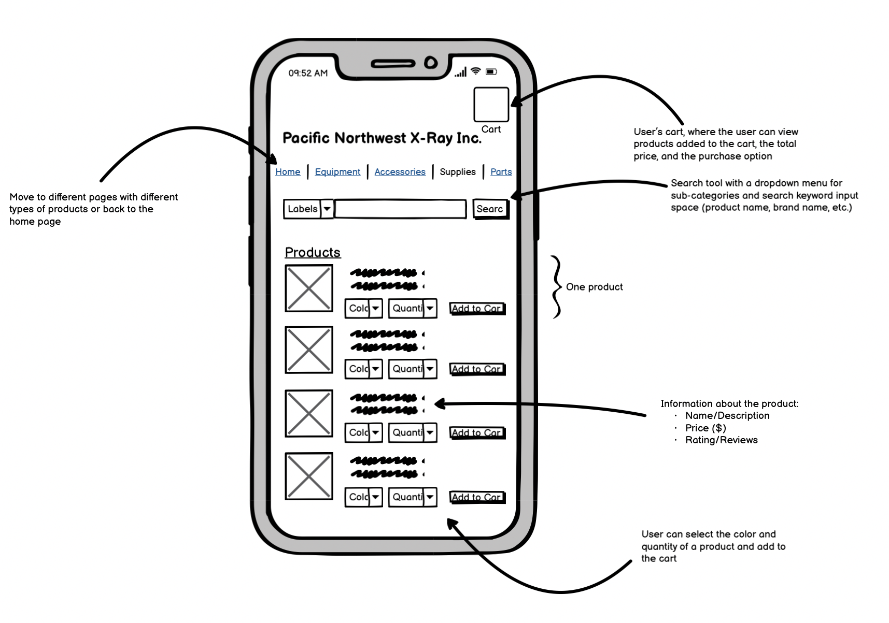
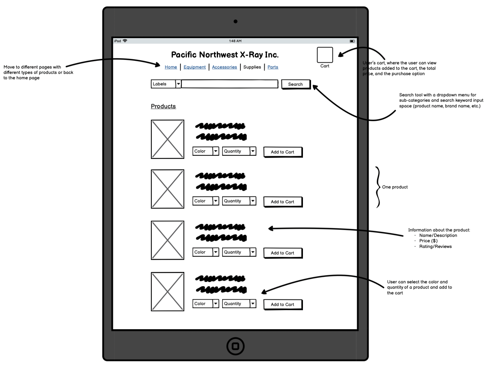
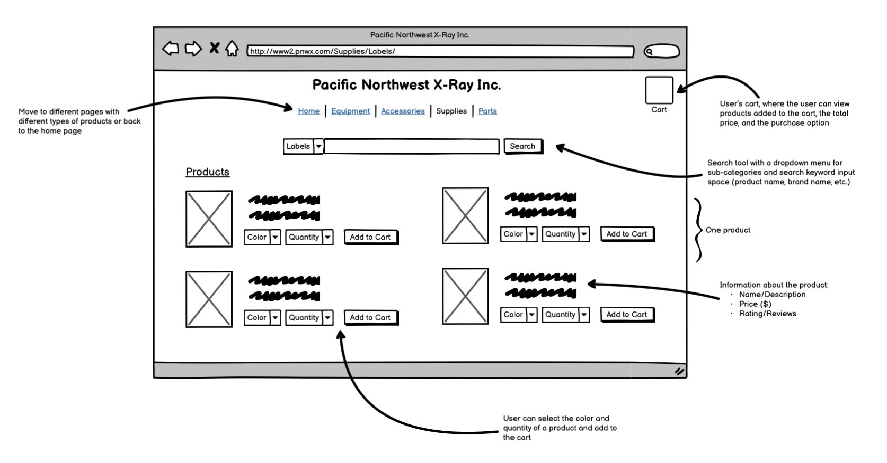
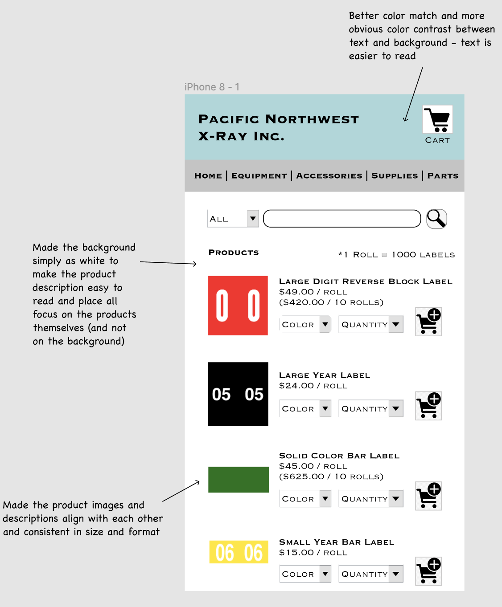
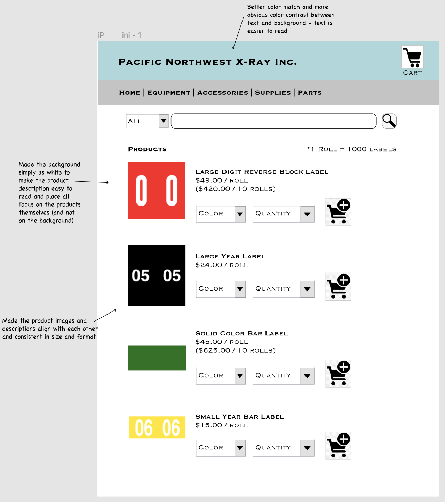
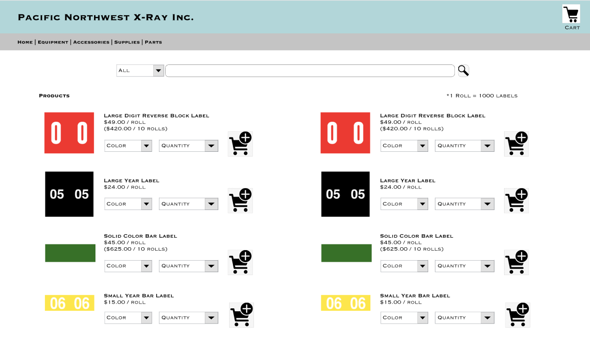

Responsive Redesign
Website with Bad Design
Pacific Northwest X-Ray Inc.
Page: Supplies > LabelsLink: www2.pnwx.com/Supplies/Labels/

Problems
Usability
Learnability
Memorability
Accessibility
For the webpage chosen, WebAIM WAVE reports 19 errors, 13 contrast errors, 33 alerts, 2 features, 0 structural elements, and 0 ARIA. The 19 errors are mostly “Missing alternative text” errors, and others include “Linked image missing alternative text,” “Image map area missing alternative text,” “Missing form label,” “Language missing or invalid,” and “Empty link” errors. The 13 contrast errors all indicate “very low contrast.” The 33 alerts are mostly “Layout table,” and others include “No heading structure,” “No page regions,” “Suspicious link text,” “Redundant link,” “Link to PDF document,” “Very small text,” and “Underlined text.”Overall, the multiple Contrast Errors are especially problematic and concerning because they are prevalent throughout the entire webpage. The black, bright yellow, or neon text colors do not harmonize at all with the various gradational shades of blue, ranging from sky blue to deep blue, making the text very hard to read and website very inaccessible. Also, the layout table (which is only visually tabular, and content is not tabular at all in nature) errors are prevalent and need to be fixed as well.
Visual Redesign
Low-Fidelity Wireframing
I used Balsamiq to produce the following wireframes.Mobile
Tablet
Desktop
The wireframes show the organized components of the website. Instead of spreading out texts and tables all over the website without any alignment, I have added consistency to the format, making it significantly more organized. Also, this design solves the difficulty of finding the separate instructions to placing orders and makes it easy to add products to the cart (after choosing the color and the quantity) and adding to the cart. This enables users to avoid having to memorize the stock number and inconveniently making orders. Also, I have organized the description for each product together in one place, so that it is easy to compare and immediately grasp. I have also solved another design problem original website: the inconspicuousness of the category buttons and the search input/button. Thus, I have placed them in the middle to allow users to navigate through the website easily without being lost.
High-Fidelity Prototyping
Mobile
Tablet
Desktop
The prototypes show the choice of colors that harmonize well, and the clear contrast between the text and the background color, making the text more visible and easier to read. I made the background as plain white to make the product description easy to read and place all focus on the products themselves (and not on the background). Also, I made the product images and descriptions align with each other and consistent in size and format.
Visual Design Style Guide

There are various interactive/responsive components in this newly created webpage. When hovering over clickable elements, the cursor always becomes a pointer. When hovering over buttons such as "View Cart," "Add to Cart," and "Search," the buttons have a darker border and a shadow. If the cursor hovers over an image, it gains a darker border and a shadow as well. When hovering over a product description, users can observe the text change in color. Ideally, upon clilcking either the product image or the product description, it should go to a more detailed product information page. When hovering over a title bar, users can observe the title change in color. These interactive actions solve the problem of the ambiguity of the original website in showing the difference between clickable and non-clickable elements. By creating a clear contrast for the clickable elements through the interactive components, this new webpage shows clickable elements much better. I have also used combo boxes and an input box to better organize the information and facilitate users' navigation throughout the website.
Responsive Redesign
Link: Redesigned WebsiteThe website is fully responsive and interactive. It works as expected on all of the different device sizes, including for mobile, tablet, and desktop. I tried WebAIM WAVE on different screen sizes to make sure that my ] website is still accessible on different devices. I also used Developer Tools and Firefox Responsive Design Mode to see how the website looks on other devices and tried changing the font size. I also tested on other computer screens. It functions correctly!